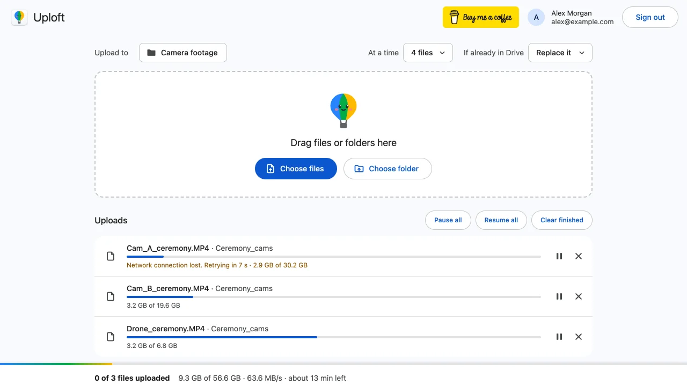

Why is my Google Drive upload stuck at 0% or on 'Starting upload'?
Published · Updated · By Sai Nath
An upload stuck at 0% means Drive has not accepted any of the file yet. The usual causes are a dead or blocked connection, Google storage that is full, Google's 750 GB daily upload limit, an expired sign-in, or an unreadable file. Check storage first, then the connection and the file.
This guide comes from the maker of Uploft, the Chrome extension mentioned below. Google's limits and behaviour link to Google's own pages, checked on 29 October 2026; what the extension does comes from its source code.
Check these first
Work down the list. The first two are account limits that no retry gets past.
- Your storage. In Drive, click Storage in the left-hand menu. Google says that once you reach your limit, "you won't be able to upload or create files in Drive". A personal Google Account includes up to 15 GB, shared by Drive, Gmail and Photos.
- The daily limit. Google's Workspace limits page says each user can upload and copy 750 GB to Drive within 24 hours. After that, uploads stop until the limit refreshes.
- Your connection. Open any other website. If pages do not load, the upload cannot start either. Reconnect, then retry.
- Your sign-in. Open drive.google.com in a new tab. If Google asks you to sign in again, do it, then retry the upload.
- The file. If one file stays at 0% while others go up, check that it opens on your computer and is not on an external drive or network folder that disconnected.
What does "Starting upload" that never ends mean?
It means the upload has not begun sending data. A Drive upload takes two steps: the browser first asks Drive to open an upload session, then sends the file's bytes to it. Google's developer documentation describes the session as the first request, whose response carries the address the data is then sent to. If that first step is refused or never answers, the progress stays at 0%.
A full storage quota, the daily limit, an expired sign-in and a blocked connection all end up here, because each stops the session from opening or the first bytes from arriving. The checklist above covers them in order of how often they are the cause.
Is it the network, the file or the account?
Tell them apart by what else still works.
- Nothing loads, or other tabs are slow too: the network. Wait for it, or switch to another connection, then retry.
- Websites load but every upload sits at 0%: the account. Check storage and the daily limit, and whether you are signed in to the right account. With several Google accounts open in one browser, Drive can upload to a different one from the one you expect.
- One file sits at 0% and the rest finish: the file. Try a copy of it saved under a new name, or from the computer's internal disk.
- A shared folder only: the permission on that folder. You need to be allowed to add files to it.
What does a restarted piece mean?
It means the connection moved no data for a while, so the uploader stopped that request and sent the same piece again. Uploft splits a file into pieces and gives each request a watchdog: if no bytes move for 60 seconds, the request is aborted and the file shows "Connection stalled. Retrying in" a few seconds.
The retry does not start the file over. Drive's resumable uploads let a client ask how many bytes the server holds and continue from the next one. Google describes this as an empty PUT to the session address, and a 308 Resume Incomplete reply whose Range header lists the bytes received. If no Range header comes back, no bytes were received, and the upload goes on from the start of the file.
A session expires after a week; Google says a 404 means the session has expired and the upload must start from the beginning. The uploader does the same and opens a new session.
When to cancel and retry
- Wait if the percentage is moving, even slowly, or the file says it is retrying. A retry has a reason and a timer.
- Retry once the cause is fixed: storage freed, connection back, signed in again. In Drive's own upload panel, use Retry on the failed file.
- Cancel and start again if a file has sat at 0% for several minutes with a working connection and enough storage. Reload drive.google.com first, then upload the file again.
- Stop retrying if the message names a limit: full storage or the 750 GB limit. Free space, or wait until the limit refreshes, which Google says happens within 24 hours.
How does Uploft help?
Uploft is a free Chrome extension (Chrome 116 or later) with two parts. On drive.google.com, a tracker presses Drive's own Retry button after 5, 20 and 60 seconds when an upload fails, and waits for the network if the computer is offline. It also keeps the computer awake from inactivity while uploads run, and stops Chrome from discarding the uploading tab.
Its own uploader (toolbar icon, then Upload files to Drive, then sign in with Google) goes further for a stuck start:
- A file shows Starting while it opens the upload session, then the bytes sent out of the total.
- A piece that moves no bytes for 60 seconds is restarted, as described above.
- Server errors and rate limits are retried after about 1, 2, 4 seconds and so on, up to a minute apart. After 20 failed tries in a row with no progress, the file is marked failed.
- Offline time does not count as failed tries; the file shows "Waiting for the network".
- Causes a retry cannot fix stop at once with a plain reason, such as "Your Google storage is full", "Drive daily upload limit reached (750 GB). Try again tomorrow" or "Sign in again to continue".

See also how resuming a Drive upload works.
What can't it fix?
- A full Google storage or the daily limit. Those are Google's limits.
- A computer with no working internet connection, or a network that blocks Google.
- A file Chrome cannot read, or a folder you have no permission to add to.
- An upload in Drive's own tab still ends if that tab is closed. Only the extension's uploader picks up after a closed tab.
- It runs in Chrome on a computer, not on phones, and it is not on the Chrome Web Store yet.
Uploft is free, and its source code is public. It is not on the Chrome Web Store yet; the home page shows what it does and what it asks for.
Sources
Checked on 29 October 2026.
- Google Drive Help: Manage your storage in Drive, Gmail & Photos.
- Google Workspace Help: Storage and upload limits for Google Workspace.
- Google for Developers: Upload file data (resumable uploads).
- Uploft: source code (upload engine and Drive client).